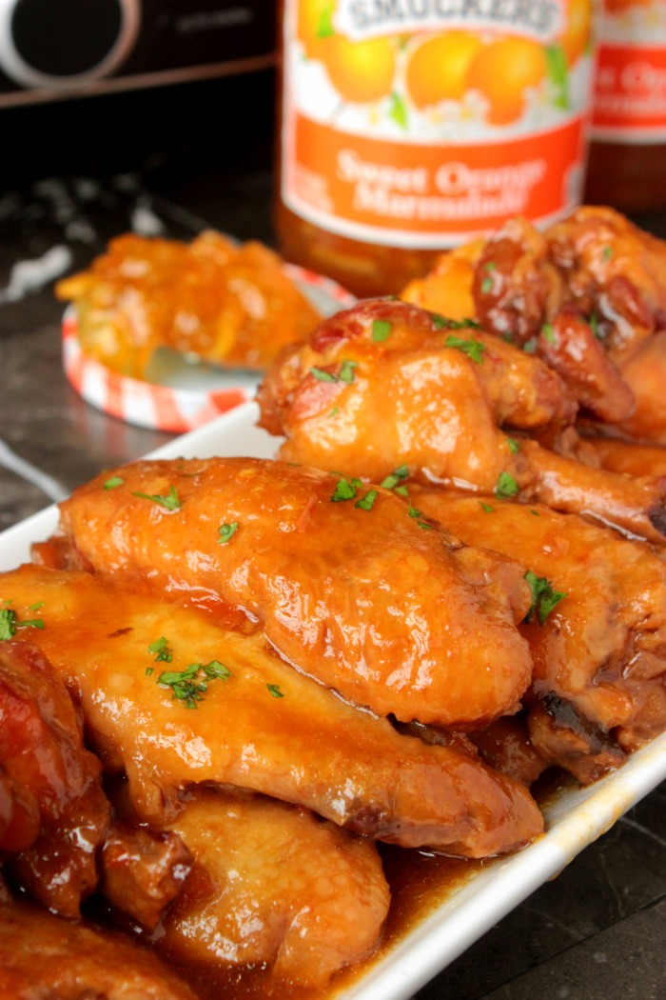

Spicy Orange Chicken Wing Sauce

Easy and delicious, this spicy orange chicken wing sauce will give you an alternative to going out for your favorite spicy orange chicken dish.
- 1 cup orange marmalade
- 1/3 cup rice vinegar
- 1/4 cup hoisin sauce
- 1 tablespoon soy sauce
- 2 tablespoons Asian chile pepper sauce
- Stir the orange marmalade, rice vinegar, hoisin sauce, soy sauce, and chili sauce together in a saucepan until combined. Place over medium-high heat, bring to a simmer, and cook until slightly thickened, about 5 minutes.